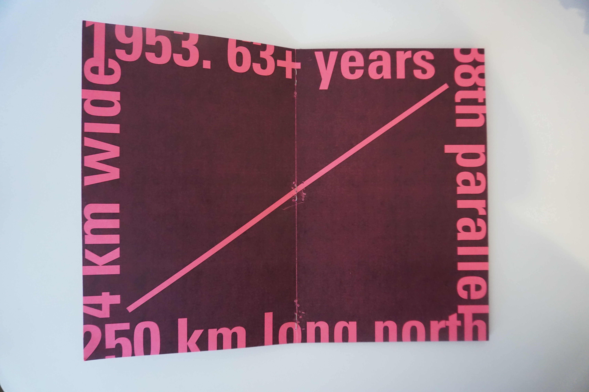
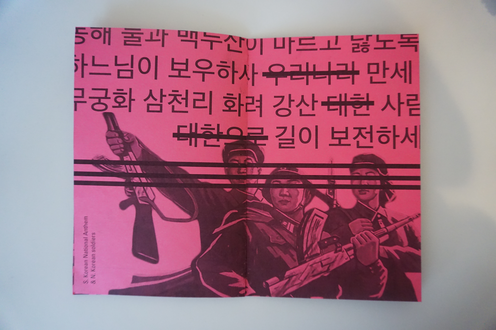
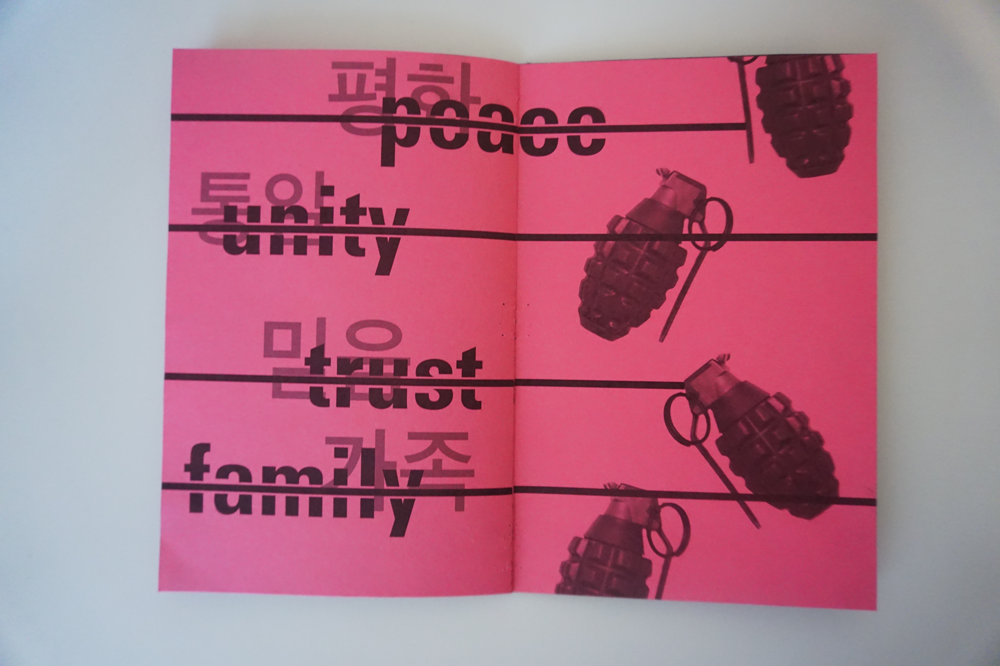
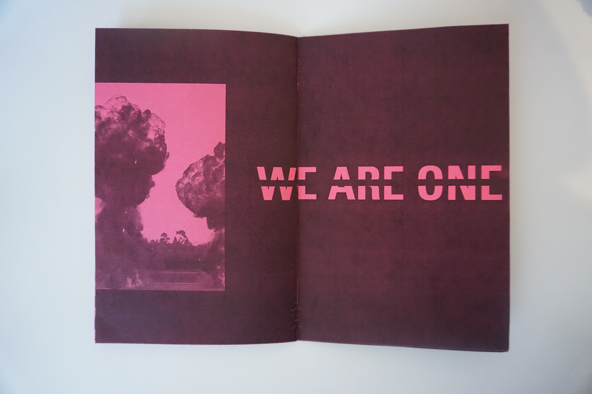
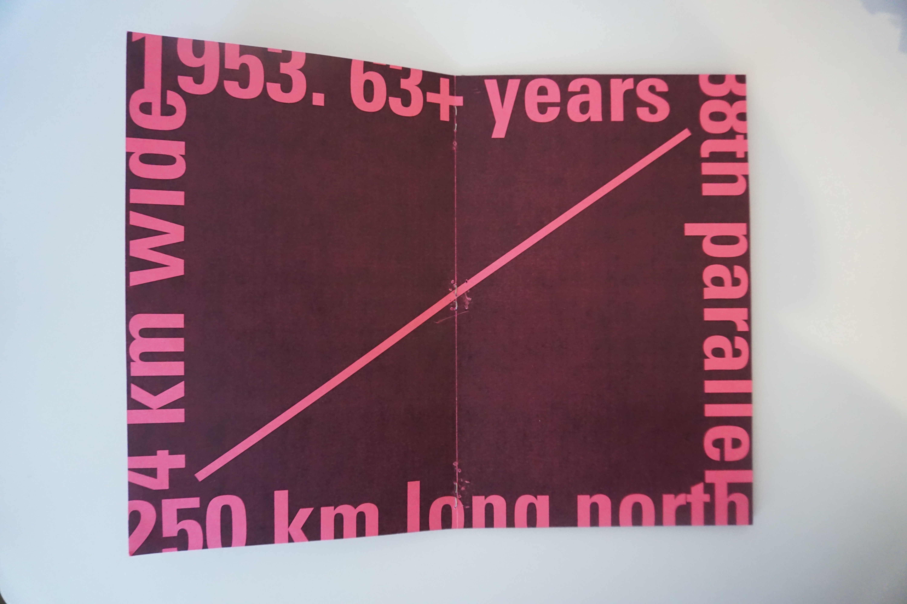
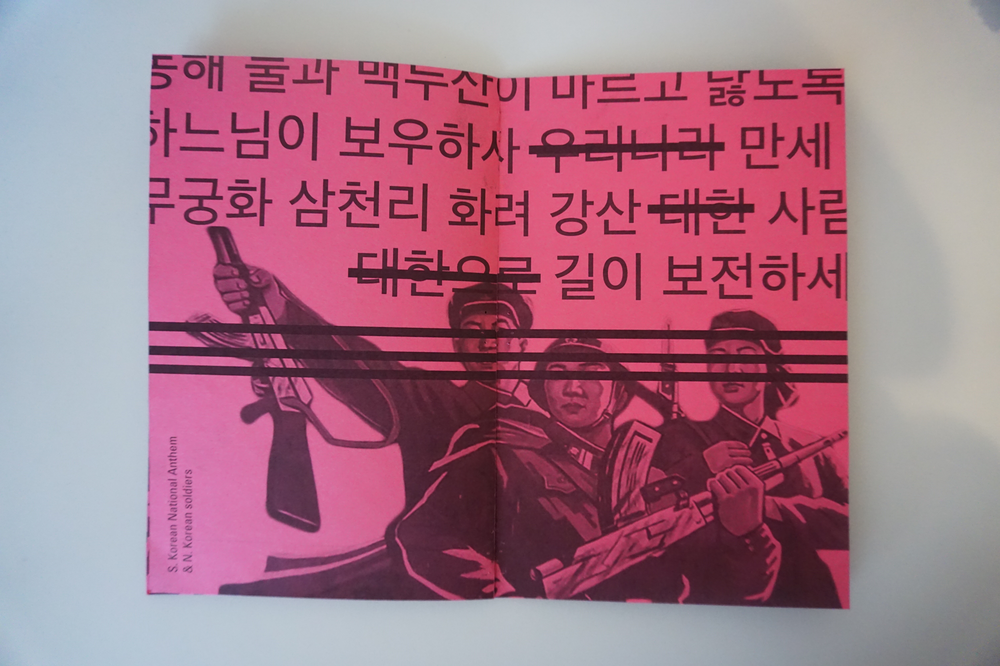
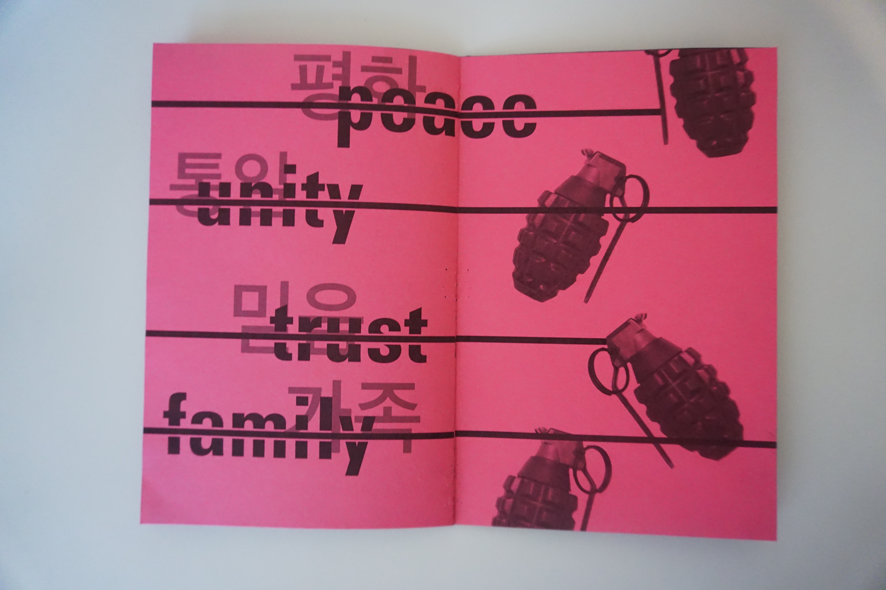
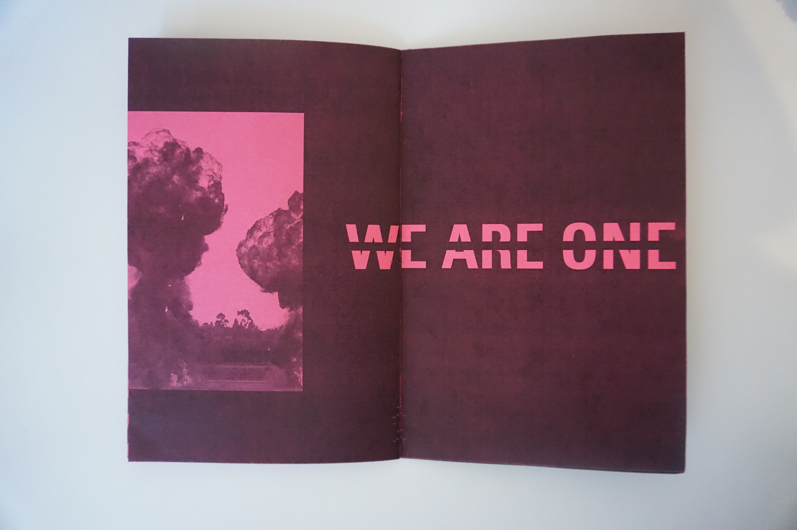

"Borders" project explores the physical border of South and North Korea.
The DMZ is on 38th parallel line, 4km wide and 250 km in length. Established in 1953, the border has been standing between two countries for 63+ years. 'Unity' is one of the main topics keeps arising in Korea. But do we really wants to be united as one? This is a 16 page booklet that explores the my perspective on this irony and my hope to take you to the world's most dangerous border existing currently.
 






